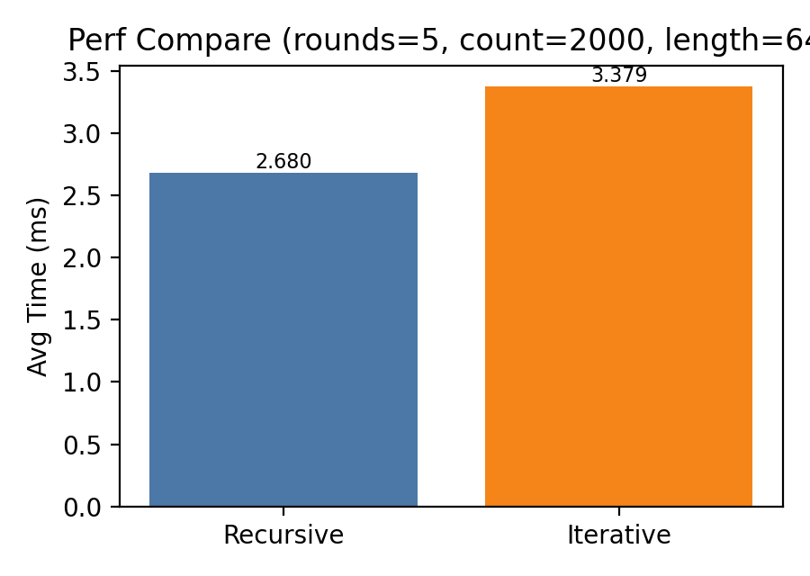

| 学校 | 中山大学计算机学院 |
| 课程 | 编译器构造实验（DCS292） |
| 姓名 | 梁力航 |
| 学号 | 23336128 |
| 日期 | 2026-03-26 |
在原始实验软装置基础上，实现可提交、可复现、可测试的后缀表达式转换程序，满足评分项中功能、规范性与鲁棒性要求。
Parser.lookahead 从静态成员改为实例成员。rest() 尾递归，改为循环实现。--recover。| 项目 | 配置 |
|---|---|
| 开发语言 | Java |
| JDK 要求 | JDK 1.5+ |
| 本机验证环境 | OpenJDK 11.0.24 LTS |
| 执行平台 | macOS（zsh）/ Windows（cmd） |
| 测试框架 | JUnit 4.13.2 + Hamcrest 1.3 |
输入为一行中缀表达式，仅允许数字 0~9 与运算符 +、-，不允许空白字符。
Expr -> Term (('+'|'-') Term)*
Term -> digit
digit -> '0'..'9'
程序输出对应后缀表达式；当输入有误时，stdout 追加 (error)，并在 stderr 输出详细错误信息。
原程序通过 rest() 递归处理后续运算。新版本以 expectOperand 和 pendingOp 维护状态，使用循环完成等价逻辑，减少递归调用开销。
| 类别 | 触发条件 | 示例 | 输出形式 |
|---|---|---|---|
| 词法错误 | 空白字符、非法字符 | 1 +2 / 1a+2 | LEXICAL error at position n |
| 语法错误 | 缺运算符、缺运算量、空表达式 | 95+2 / 9-5+-2 | SYNTAX error at position n |
./build.sh ./run.sh ./run.sh --recover ./run.sh --quiet < testcases/tc-001.infix
build.bat run.bat run.bat --recover run.bat --quiet < testcases\tc-001.infix
$ printf '9-5+2\n' | java -cp bin Postfix Input an infix expression and output its postfix notation: 95-2+ End of program.
$ printf '95+2\n' | java -cp bin Postfix Input an infix expression and output its postfix notation: 9 (error) End of program. SYNTAX error at position 2: missing operator
$ printf '1 +2\n' | java -cp bin Postfix Input an infix expression and output its postfix notation: 1 (error) End of program. LEXICAL error at position 2: whitespace not allowed
| 用例 | 输入 | 期望输出 | 实际输出 | 结论 |
|---|---|---|---|---|
| tc-001 | 9-5+2 | 95-2+ | 95-2+ | 通过 |
| tc-002 | 1-2+3-4+5-6+7-8+9-0 | 12-3+4-5+6-7+8-9+0- | 12-3+4-5+6-7+8-9+0- | 通过 |
| tc-003 | 95+2 | 9 (error) | 9 (error) | 通过 |
| tc-004 | 9-5+-2 | 95- (error) | 95- (error) | 通过 |
$ ./test.sh Running JUnit tests... JUnit version 4.13.2 ...... Time: 0.01 OK (6 tests)
参数：rounds=5，exprCount=2000，length=64
| 版本 | 平均耗时 (ms) |
|---|---|
| Recursive | 2.680 |
| Iterative | 3.379 |

说明：迭代版包含更完整的错误检测路径，本次测量中略慢属于合理现象。性能对比应基于功能等价与统一统计口径。
Javadoc 通过 doc.sh / doc.bat 生成到 doc/，覆盖 Parser、ParseResult、ParseError 等核心类。
lookahead 由静态改为实例字段后，状态管理更符合面向对象设计。本实验最大的提升不在“能否输出后缀”，而在于把解析器、错误处理、测试、文档和脚本打通，形成可验证、可复现的完整提交物。
为了兼容样例输出，stdout 保持简洁；详细错误输出放在 stderr，使自动比对与问题定位互不干扰。
| 文件 | 用途 |
|---|---|
build.sh / build.bat | 编译源码到 bin/ |
run.sh / run.bat | 运行主程序 |
test.sh / test.bat | 执行 JUnit 与样例对拍 |
doc.sh / doc.bat | 生成 Javadoc 文档 |
perf.sh / perf.bat | 运行性能比较 |
lib/ | JUnit 4.13.2 + Hamcrest 1.3 |